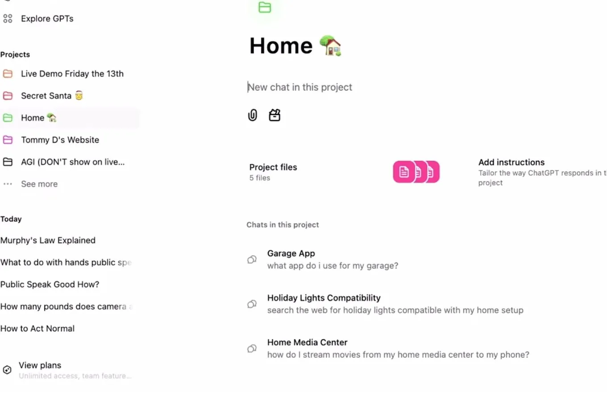

Useful ways to organize work with ChatGPT Projects
Originally posted on LinkedIn, December 26, 2024.
OpenAI, the company behind ChatGPT, is shipping features at an unprecedented pace. Each one changes what the product can do, but also raises a basic question: what is it useful for?
OpenAI released Projects, a way to manage multiple chats around a single topic. Amitay Boneh shared several useful examples in his excellent newsletter:
- Product work, with documentation, specs, a roadmap, and related material.
- Customer feedback, with interview summaries, surveys, and reviews.
- Copywriting, with examples of marketing materials, blog posts, and emails.
- Social posts, with examples of previous posts that establish the right writing style.
- SQL, with sample queries and your schema structure.
Projects is also available on ChatGPT's free plan.
